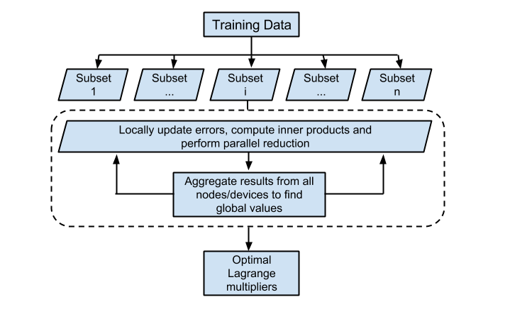

Summary
We are going to implement a parallel Support Vector Machine algorithm for binary classification using the Legion parallel programming system. This would be achieved by parallelizing the modified Sequential Minimal Optimization algorithm used by popular tools like LIBSVM, for distributed heterogeneous architectures.
Background
Support Vector Machines (SVMs) is a widely used supervised machine learning algorithm, which is essentially a discriminative classifier used for linear and nonlinear classification tasks. The training of an SVM is a Quadratic Programming (QP) optimization problem, where the primal is converted to its dual form. Platt originally proposed the SMO technique for solving the dual QP problem, by breaking it down to a series of smallest possible QP problems.
The SMO technique iteratively solves for a target function, by updating the Lagrangian multipliers and the error terms over the entire training dataset. Each update step involves the computation of the modified inner products of two training data input vectors (the kernel trick), which is computationally intensive over the set of all training data. We aim to implement a parallel SMO algorithm which distributes the task of training over different nodes as proposed by Cao et. al. [1], and extend it to multiple GPU devices based on Herrero-Lopez et. al.'s [2] methodology.
The parallel calculation of error terms and updates of the Lagrangian multipliers will ideally scale almost linearly with the number of sub processes, and allow for the use of parallel reduction with low communication overheads for global constants. We are using Legion to create a portable implementation that leverages distributed environments, while creating a high-performance mapping interface specifically targeted at the latedays cluster.

Challenge
The aspect of the problem that is most challenging is creating Legion tasks and regions that parallelize the kernel computations in a way that minimizes communication overheads between:
-
Nodes in the cluster
-
GPU and CPU
This is exacerbated by the fact that our team is completely new to the Legion language, and has only a basic understanding of SVM theory and the SMO algorithm.
For a single GPU implementation of a parallel SVM algorithm, [2] profiles time spent on communication versus computation on various training datasets. The following trends were noted:
-
Datasets with a large number of features per sample and a large number of samples spent most of the GPU time on computation (the kernel computation, which is a SGEMV matrix operation).
-
Datasets with a relatively smaller number of features and samples were seen to spend up to 33% of GPU time on communication, during reductions and updates across GPU tasks.
Since we are are shifting this to a distributed environment, we would expect to see the communication-to-computation overhead increase. However, there exist even more complex datasets [3] that we expect to exhibit low ratios in our distributed environment as well.
Resources
We will be using the latedays cluster for running the system, using Legion to port the implementation across different nodes. We hope to leverage parallelism primarily across the GPU devices in the cluster.
We are building upon the pseudo code provided for the parallel SMO algorithm, which uses OpenMPI to distribute computation across nodes by Cao et. al.[1] And we aim to start with the basic division of work across GPUs as described by Herrero-Lopez et. al.[2] in their implementation.
Goals and Deliverables
Plan to achieve:
-
A Legion-based, distributed, parallel SVM implementation.
-
Benchmark this implementation against the standard LibSVM implementation.
-
Achieve the following training speedups over LibSVM (expected):
|
Setup vs. Dataset |
Adult |
Web |
Mnist (Even vs Odd) |
Covertype |
|
Speedup achieved using single Tesla C1060 [2] |
10.45x |
14.97x |
32.79x |
- |
|
Speedup achieved using chunking algorithm and threeTesla C1060s and one Intel Xeon E5426 2.8GHz quad-core CPU. [3] |
19.38x |
42.89x |
129.64x |
Too large for LibSVM, Runtime: 651s |
|
Speedup expected in our implementation on latedays (which has 1 Tesla K40 on each machine) |
~10x (High communication-to-computation overhead) |
~35x |
~120x |
< 600s |
Hope to achieve:
-
Profiling against Spark LIBLINEAR or MPI LIBLINEAR [4]
-
Profiling for multi-class datasets.
Goals and Deliverables
We plan to use Legion and the latedays cluster. As mentioned above, this would allow us to create a portable implementation of our distributed SVM along with a high-performance mapping interface specifically targeted at the latedays.
Schedule
|
Dates |
Planned Goals |
|
4/3 - 4/10 |
Understanding Legion paradigms and setting up GASNet on latedays. Legion "Hello, World!" on latedays. Review existing literature on Parallel SVMs. |
|
4/11 - 4/16 |
Get a correct, unoptimized implementation up and running. |
|
4/17 - 4/24 |
Optimize implementation for performance. |
|
4/25 - 5/2 |
Benchmark against LIBSVM and profile performance (Exams week!) |
|
5/3 - 5/11 |
Stretch goals, Presentation and Write up. |
Bibliography
[1] Cao, Li Juan, et al. "Parallel sequential minimal optimization for the training of support vector machines." Neural Networks, IEEE Transactions on 17.4 (2006): 1039-1049.
[2] Herrero-Lopez, Sergio, John R. Williams, and Abel Sanchez. "Parallel multiclass classification using SVMs on GPUs." Proceedings of the 3rd Workshop on General-Purpose Computation on Graphics Processing Units. ACM, 2010.
[3] Li, Qi, et al. "Parallel multitask cross validation for Support Vector Machine using GPU." Journal of Parallel and Distributed Computing 73.3 (2013): 293-302.
[4] http://www.csie.ntu.edu.tw/~cjlin/libsvmtools/distributed-liblinear/